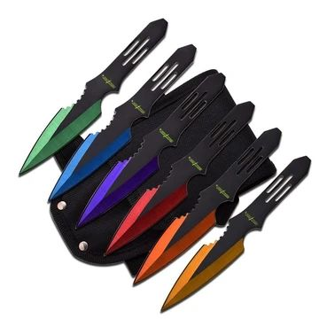

Vidia
.jpg)
Manipulador
Habilidades
- Contactos en las fuerzas policiales
- Mente Fria
- Acceso a datos de otros cazadores
- Familia con habilidades Nen CADUCADOs
Hatsu
El Hatsu de Krieg es "Hades":
Vidia manipula una serie de cuchillos las cuales reaccionan a la intensidad de Nen que ella transmite a traves de ellos.Otorgandoles asi distintas cualidades
- Rojo-Naraja:Puede quemar al cortar a su enemigo,o generar pequeñas chispas/llamas
- Amarillo:Genera una pequeña descarga,la suficiente para inmovilizar breves momentos
- Marron:Crea un hilo de Nen el cual se puede tensar.Vidia es capaz de coordinar sus cuchillos en un area de 20m°2 para generar un domo.Pero no puede atacar ni defenderse mientras hace esto
- Azul-Violeta:dos cuchillos con estos colores estan conectados entre si,como si fuera un cable.Las caracteristicas que reciba uno se transmiten al hilo,y al otro cuchillo.Por ejemplo,un cuchillo se electrifica,el hilo y el cuchllo receptor tambien se elctrificaran
- Marron: Las cuchillas se endurecen,por lo cual se vuelven mas resistentes.Vidia las usa como escudo la mayoria de las veces
Hoja
>>Nivel:
11
>>Vida
30
°NEN°
11000
---Stats
Fuerza:
+0
Percepcion:
+2
Agilidad:
+4
Aguante:
+2
Ingenio:
+4
Carisma:
+2
SKILLS
- Buscar
2/5
- Combate C/C
0/5
- Comerciar
0/5
- Correr
1/5
- Intimidar
0/5
- Cazar
3/5
- Esconderse
4/5
- Apuntar
5/5
- Hurtar
0/5
- Manejo
0/5
- Medicina
0/5
- Naturaleza
3/5